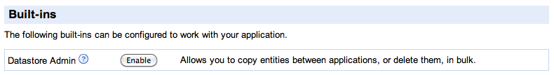
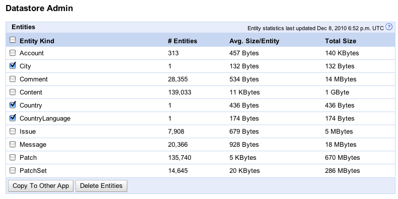

Backup/Restore, Copy, and Delete Data
Experimental!
Datastore Administration is an experimental, innovative, and rapidly changing new feature for App Engine. Unfortunately, being on the bleeding edge means that we may make backwards-incompatible changes to Datastore Administration. We will inform the community when this feature is no longer experimental.
You can use the Datastore Admin tab of the Admin Console to
Important! In order to use these Datastore Admin features for your app, you must first enable datastore_admin in your app.
Enabling datastore_admin for an Application
In order to use the features of the Datastore Admin tab, you must enable datastore_admin for your application using the Applications Settings page of the Administration Console. Under the Built-Ins heading, click Enable next to Datastore Admin:

Caveats on Using Data Admin Features
- For copy, delete, and backups, recent updates may not be considered.
- All Datastore Admin operations occur within your applications, and thus counts against your quota.
- We strongly recommend that you set your application to read-only mode during a backup or restore.
- When copying entities to a remote target or restoring from backup all entities with the same keys will be overridden. Operations can be performed multiple times without the risk of creating duplicates. Be aware that the copy/restore operations do not delete extra data.
Warning! Backup, restore, copy, and delete occur within your application, and thus count against your quota.
Backup and Restore
You can use the Datastore Admin tab of the Admin Console to backup entities of selected kinds and when needed restore from a selected backup, with the backup/restore affecting all namespaces. (The backups are written to Blobstore.) This feature is intended to help you recover from accidental deletes of data. When you restore from a backup, any new entities added since the backup are retained, and entities that existed at backup-time and that were modified after the backup are overwritten with values from the backup.
Note: Blob data is not backed up by this backup feature!
To backup your data,
- Optionally, disable datastore writes for your app.
- Go to the Datastore Admin screen in the Data section of the Administration Console.
- Select the entity kind(s) that you wish to backup.
- Click Backup Entities.
- In the advisory page that is displayed, notice that the default queue is used for the backup job. Change this to another queue if desired.
- Also, in the advisory page, notice that a backup name is supplied and that it includes a datestamp. You can change this to anything you want. (If you make more than one backup per day, you'll have to change this value.)
- Start the backup jobs by clicking Backup Entities. Notice that a job status page is displayed.
- If you disabled writes, re-enable datastore writes for your application.
To restore from a backup,
- Optionally, disable datastore writes for your app.
- Go to the Datastore Admin screen in the Data section of the Administration Console.
- In the list of available backups, select the backup that you want to restore from.
- Click Restore.
- In the advisory page that is displayed, notice that the default queue is used for the restore job. Change this to another queue if desired.
- Also in the advisory page, notice the listing of all of the entity kinds to be restored. Make sure this list is what you are expecting to restore.
- Start the restore by clicking Restore. Notice that a job status page is displayed.
- If you disabled writes, re-enable datastore writes for your application.
Copying Entities to Another Application
Important: The Datastore Admin copy feature is available only for Python apps. If you have a Java application, see A Note for Java Developers. You must also enable datastore_admin.
You can use the Datastore Admin tab of the Admin Console to copy all entities of a kind, or all entities of all kinds, to another application. The datastore copy functionality uses the Datastore Admin screen in the Data section of the source application's Admin Console. From the Datastore Admin screen, you can select and copy entity kind(s) with the click of a button:

A Note for Java Developers
The datastore copy feature is currently available only for Python applications. If your target app is built in Java, you'll need to create a non-default Python runtime for it and use that as the target application. The following steps describe how to create a non-default Python runtime for your target application using a sample application called datastore_admin:
- Download Python 2.5.
- Download the datastore_admin app.
- Download the Python SDK.
- Grant permission for the source application to write to the target application
- Run
appcfg.py -A <your_app_id> update <directory-of-demo-app>
Procedure
If you used the demo app described in A Note for Java Developers, you can skip steps 1–3.
To copy a datastore,
- Make sure data_admin is enabled for your application.
- Enable the
remote_api builtin for the target application so it can receive data from the source. To do this, add the following to app.yaml:
builtins:
- remote_api: on
- Grant permission for the source app to write to the target app by doing the following,
- Add the following to the
appengine_config.py file in the root directory of your application:
remoteapi_CUSTOM_ENVIRONMENT_AUTHENTICATION = ('HTTP_X_APPENGINE_INBOUND_APPID', ['source appid here'])
If you do not have a appengine_config.py file, you can create a new one or copy the sample located in google/appengine/ext/appstats/sample_appengine_config.py.
- Upload the modified version of your application using
appcfg.py update.
- Set the source application to read-only mode.
Although this step is not required, it is strongly recommended. Copying entities into a new datastore takes time and writes done during the copy might not be transferred during the copy. If the source application is not in read-only mode, you can still copy data, but you'll see a notreadonly warning in the Admin Console. The destination datastore is not guaranteed to receive a complete copy of the new data unless writes are disabled.
- Select the entity kind(s) to copy individually or in bulk, and copy them using Copy To Other App. On the confirmation screen, enter the remote endpoint of the target app:
- The typical remote endpoint is
http://your_target_app_id.appspot.com/_ah/remote_api.
- If you used the sample app to copy your data, the remote endpoint is
http://datastore-admin.your_target_app_id.appspot.com/_ah/remote_api.
- If you used an alternate major version, the remote endpoint of your target application is
http://app_version.your_target_app_id.appspot.com/_ah/remote_api.
After you confirm, the system validates the request. If the remote_api connection can be established, one or more mapreduce operations begins to copy the data. You can follow the link to see the status of the initial set of mapreduce operations. If the application uses the namespace feature, a mapreduce runs for each namespace for each entity kind.
You can view a summary of the copy status from the Datastore Admin page. To view the individual mapreduce status, you can visit http://your_target_app_id.appspot.com/_ah/mapreduce/
- If you disabled datastore writes as recommended prior to the copy, re-enable writes.
Deleting Entities in Bulk
You can use the Datastore Admin tab of the Admin Console to delete all entities of a kind, or all entities of all kinds, in all namespaces. To enable this feature, simply enable Datastore Admin for your application in the Administration Console.
Adding this builtin enables the Datastore Admin screen in the Data section of the Administration Console. From this screen, you can select the entity kind(s) to delete individually or in bulk, and delete them using the Delete Entities button.